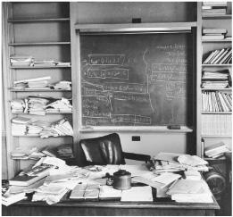

Einstein’s study, as he left it
When Sir Isaac Newton died, his body lay in state in the Jerusalem chamber of Westminster Abbey, and his pallbearers included the lord high chancellor, two dukes, and three earls. Einstein could have had a similar funeral, glittering with dignitaries from around the world. Instead, in accordance with his wishes, he was cremated in Trenton on the afternoon that he died, before most of the world had heard the news. There were only twelve people at the crematorium, including Hans Albert Einstein, Helen Dukas, Otto Nathan, and four members of the Bucky family. Nathan recited a few lines from Goethe, and then took Einstein’s ashes to the nearby Delaware River, where they were scattered.1
“No other man contributed so much to the vast expansion of 20th century knowledge,” President Eisenhower declared. “Yet no other man was more modest in the possession of the power that is knowledge, more sure that power without wisdom is deadly.” The New York Times ran nine stories plus an editorial about his death the next day: “Man stands on this diminutive earth, gazes at the myriad stars and upon billowing oceans and tossing trees—and wonders. What does it all mean? How did it come about? The most thoughtful wonderer who appeared among us in three centuries has passed on in the person of Albert Einstein.”2
Einstein had insisted that his ashes be scattered so that his final resting place would not become the subject of morbid veneration. But there was one part of his body that was not cremated. In a drama that would seem farcical were it not so macabre, Einstein’s brain ended up being, for more than four decades, a wandering relic.3
Hours after Einstein’s death, what was supposed to be a routine autopsy was performed by the pathologist at Princeton Hospital,Thomas Harvey, a small-town Quaker with a sweet disposition and rather dreamy approach to life and death. As a distraught Otto Nathan watched silently, Harvey removed and inspected each of Einstein’s major organs, ending by using an electric saw to cut through his skull and remove his brain. When he stitched the body back up, he decided, without asking permission, to embalm Einstein’s brain and keep it.
The next morning, in a fifth-grade class at a Princeton school, the teacher asked her students what news they had heard. “Einstein died,” said one girl, eager to be the first to come up with that piece of information. But she quickly found herself topped by a usually quiet boy who sat in the back of the class. “My dad’s got his brain,” he said.4
Nathan was horrified when he found out, as was Einstein’s family. Hans Albert called the hospital to complain, but Harvey insisted that there may be scientific value to studying the brain. Einstein would have wanted that, he said. The son, unsure what legal and practical rights he now had in this matter, reluctantly went along.5
Soon Harvey was besieged by those who wanted Einstein’s brain or a piece of it. He was summoned to Washington to meet with officials of the U.S. Army’s pathology unit, but despite their requests he refused to show them his prized possession. Guarding it had become a mission. He finally decided to have friends at the University of Pennsylvania turn part of it into microscopic slides, and so he put Einstein’s brain, now chopped into pieces, into two glass cookie jars and drove it there in the back of his Ford.
Over the years, in a process that was at once guileless as well as bizarre, Harvey would send off slides or chunks of the remaining brain to random researchers who struck his fancy. He demanded no rigorous studies, and for years none were published. In the meantime, he quit Princeton Hospital, left his wife, remarried a couple of times, and moved around from New Jersey to Missouri to Kansas, often leaving no forwarding address, the remaining fragments of Einstein’s brain always with him.
Every now and then, a reporter would stumble across the story and track Harvey down, causing a minor media flurry. Steven Levy, then of New Jersey Monthly and later of Newsweek, found him in 1978 in Wichita, where he pulled a Mason jar of Einstein’s brain chunks from a box labeled “Costa Cider” in the corner of his office behind a red plastic picnic cooler.6 Twenty years later, Harvey was tracked down again, by Michael Paterniti, a free-spirited and soulful writer for Harper’s, who turned his road trip in a rented Buick across America with Harvey and the brain into an award-winning article and best-selling book, Driving Mr. Albert.
Their destination was California, where they paid a call on Einstein’s granddaughter, Evelyn Einstein. She was divorced, marginally employed, and struggling with poverty. Harvey’s perambulations with the brain struck her as creepy, but she had a particular interest in one secret it might hold. She was the adopted daughter of Hans Albert and his wife Frieda, but the timing and circumstances of her birth were murky. She had heard rumors that made her suspect that possibly, just possibly, she might actually be Einstein’s own daughter. She had been born after Elsa’s death, when Einstein was spending time with a variety of women. Perhaps she had been the result of one of those liaisons, and he had arranged for her to be adopted by Hans Albert. Working with Robert Schulmann, an early editor of the Einstein papers, she hoped to see what could be learned by studying the DNA from Einstein’s brain. Unfortunately, it turned out that the way Harvey had embalmed the brain made it impossible to extract usable DNA. And so her questions were never answered.7
In 1998, after forty-three years as the wandering guardian of Einstein’s brain, Thomas Harvey, by then 86, decided it was time to pass on the responsibility. So he called the person who currently held his old job as pathologist at Princeton Hospital and went by to drop it off.8
Of the dozens of people to whom Harvey doled out pieces of Einstein’s brain over the years, only three published significant scientific studies. The first was by a Berkeley team led by Marian Diamond.9 It reported that one area of Einstein’s brain, part of the parietal cortex, had a higher ratio of what are known as glial cells to neurons. This could, the authors said, indicate that the neurons used and needed more energy.
One problem with this study was that his 76-year-old brain was compared to eleven others from men who had died at an average age of 64. There were no other geniuses in the sample to help determine if the findings fit a pattern. There was also a more fundamental problem: with no ability to trace the development of the brain over a lifetime, it was unclear which physical attributes might be the cause of greater intelligence and which might instead be the effect of years spent using and exercising certain parts of the brain.
A second paper, published in 1996, suggested that Einstein’s cerebral cortex was thinner than in five other sample brains, and the density of his neurons was greater. Once again, the sample was small and evidence of any pattern was sketchy.
The most cited paper was done in 1999 by Professor Sandra Witelson and a team at McMaster University in Ontario. Harvey had sent her a fax, unprompted, offering samples for study. He was in his eighties, but he personally drove up to Canada by himself, transporting a hunk that amounted to about one-fifth of Einstein’s brain, including the parietal lobe.
When compared to brains of thirty-five other men, Einstein’s had a much shorter groove in one area of his inferior parietal lobe, which is thought to be key to mathematical and spatial thinking. His brain was also 15 percent wider in this region. The paper speculated that these traits may have produced richer and more integrated brain circuits in this region.10
But any true understanding of Einstein’s imagination and intuition will not come from poking around at his patterns of glia and grooves. The relevant question was how his mind worked, not his brain.
The explanation that Einstein himself most often gave for his mental accomplishments was his curiosity. As he put it near the end of his life, “I have no special talents, I am only passionately curious.”11
That trait is perhaps the best place to begin when sifting through the elements of his genius. There he is, as a young boy sick in bed, trying to figure out why the compass needle points north. Most of us can recall seeing such needles swing into place, but few of us pursue with passion the question of how a magnetic field might work, how fast it might propagate, how it could possibly interact with matter.
What would it be like to race alongside a light beam? If we are moving through curved space the way a beetle moves across a curved leaf, how would we notice it? What does it mean to say that two events are simultaneous? Curiosity, in Einstein’s case, came not just from a desire to question the mysterious. More important, it came from a childlike sense of marvel that propelled him to question the familiar, those concepts that, as he once said, “the ordinary adult never bothers his head about.”12
He could look at well-known facts and pluck out insights that had escaped the notice of others. Ever since Newton, for example, scientists had known that inertial mass was equivalent to gravitational mass. But Einstein saw that this meant that there was an equivalence between gravity and acceleration that would unlock an explanation of the universe.13
A tenet of Einstein’s faith was that nature was not cluttered with extraneous attributes. Thus, there must be a purpose to curiosity. For Einstein, it existed because it created minds that question, which produced an appreciation for the universe that he equated with religious feelings. “Curiosity has its own reason for existing,” he once explained. “One cannot help but be in awe when one contemplates the mysteries of eternity, of life, of the marvelous structure of reality.”14
From his earliest days, Einstein’s curiosity and imagination were expressed mainly through visual thinking—mental pictures and thought experiments—rather than verbally. This included the ability to visualize the physical reality that was painted by the brush strokes of mathematics. “Behind a formula he immediately saw the physical content, while for us it only remained an abstract formula,” said one of his first students.15 Planck came up with the concept of the quanta, which he viewed as mainly a mathematical contrivance, but it took Einstein to understand their physical reality. Lorentz came up with mathematical transformations that described bodies in motion, but it took Einstein to create a new theory of relativity based on them.
One day during the 1930s, Einstein invited Saint-John Perse to Princeton to find out how the poet worked. “How does the idea of a poem come?” Einstein asked. The poet spoke of the role played by intuition and imagination. “It’s the same for a man of science,” Einstein responded with delight. “It is a sudden illumination, almost a rapture. Later, to be sure, intelligence analyzes and experiments confirm or invalidate the intuition. But initially there is a great forward leap of the imagination.”16
There was an aesthetic to Einstein’s thinking, a sense of beauty. And one component to beauty, he felt, was simplicity. He had echoed Newton’s dictum “Nature is pleased with simplicity” in the creed he declared at Oxford the year he left Europe for America: “Nature is the realization of the simplest conceivable mathematical ideas.”17
Despite Occam’s razor and other philosophical maxims along these lines, there is no self-evident reason this has to be true. Just as it is possible that God might actually play dice, so too it is possible that he might delight in Byzantine complexities. But Einstein didn’t think so. “In building a theory, his approach had something in common with that of an artist,” said Nathan Rosen, his assistant in the 1930s. “He would aim for simplicity and beauty, and beauty for him was, after all, essentially simplicity.”18
He became like a gardener weeding a flower bed. “I believe what allowed Einstein to achieve so much was primarily a moral quality,” said physicist Lee Smolin. “He simply cared far more than most of his colleagues that the laws of physics have to explain everything in nature coherently and consistently.”19
Einstein’s instinct for unification was ingrained in his personality and reflected in his politics. Just as he sought a unified theory in science that could govern the cosmos, so he sought one in politics that could govern the planet, one that would overcome the anarchy of unfettered nationalism through a world federalism based on universal principles.
Perhaps the most important aspect of his personality was his willingness to be a nonconformist. It was an attitude that he celebrated in a foreword he wrote near the end of his life to a new edition of Galileo. “The theme that I recognize in Galileo’s work,” he said, “is the passionate fight against any kind of dogma based on authority.”20
Planck and Poincaré and Lorentz all came close to some of the breakthroughs Einstein made in 1905. But they were a little too confined by dogma based on authority. Einstein alone among them was rebellious enough to throw out conventional thinking that had defined science for centuries.
This joyous nonconformity made him recoil from the sight of Prussian soldiers marching in lockstep. It was a personal outlook that became a political one as well. He bristled at all forms of tyranny over free minds, from Nazism to Stalinism to McCarthyism.
Einstein’s fundamental creed was that freedom was the lifeblood of creativity. “The development of science and of the creative activities of the spirit,” he said, “requires a freedom that consists in the independence of thought from the restrictions of authoritarian and social prejudice.” Nurturing that should be the fundamental role of government, he felt, and the mission of education.21
There was a simple set of formulas that defined Einstein’s outlook. Creativity required being willing not to conform. That required nurturing free minds and free spirits, which in turn required “a spirit of tolerance.” And the underpinning of tolerance was humility—the belief that no one had the right to impose ideas and beliefs on others.
The world has seen a lot of impudent geniuses. What made Einstein special was that his mind and soul were tempered by this humility. He could be serenely self-confident in his lonely course yet also humbly awed by the beauty of nature’s handiwork. “A spirit is manifest in the laws of the universe—a spirit vastly superior to that of man, and one in the face of which we with our modest powers must feel humble,” he wrote. “In this way the pursuit of science leads to a religious feeling of a special sort.”22
For some people, miracles serve as evidence of God’s existence. For Einstein it was the absence of miracles that reflected divine providence. The fact that the cosmos is comprehensible, that it follows laws, is worthy of awe. This is the defining quality of a “God who reveals himself in the harmony of all that exists.”23
Einstein considered this feeling of reverence, this cosmic religion, to be the wellspring of all true art and science. It was what guided him. “When I am judging a theory,” he said, “I ask myself whether, if I were God, I would have arranged the world in such a way.”24 It is also what graced him with his beautiful mix of confidence and awe.
He was a loner with an intimate bond to humanity, a rebel who was suffused with reverence. And thus it was that an imaginative, impertinent patent clerk became the mind reader of the creator of the cosmos, the locksmith of the mysteries of the atom and the universe.